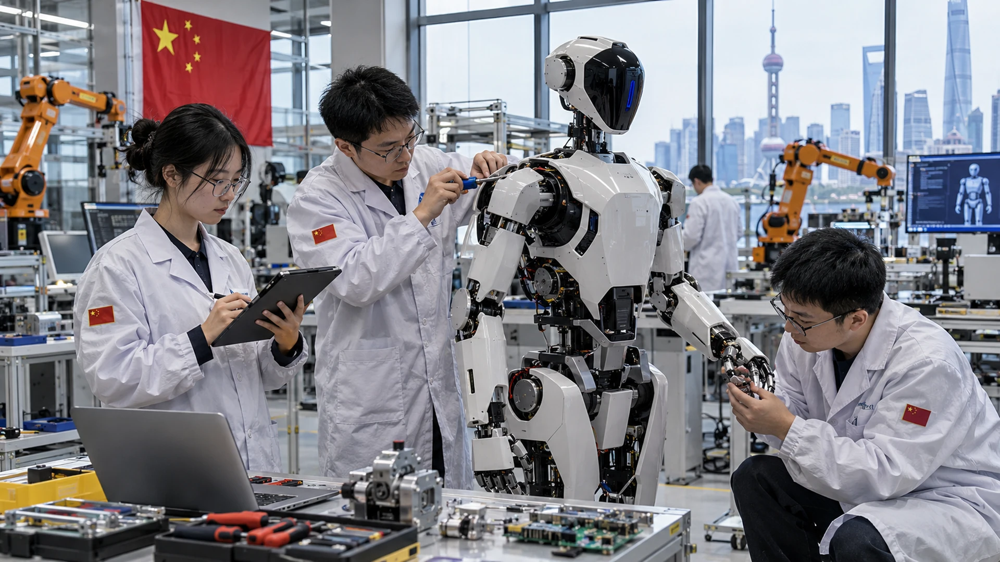

China’s Robotics Sector Draws $13 Billion as Focus Shifts From Stunts to AI Skills
Embodied-AI companies raised 93.5 billion yuan in 322 first-half deals. The challenge is turning heavily funded demonstrations into dependable work.

From demonstrations to useful work
Chinese companies developing embodied artificial intelligence raised 93.5 billion yuan, about $13 billion, across 322 deals in the first half of 2026, according to ITjuzi figures cited by Reuters. The investment is supporting a race to make robots reliable at work, beyond rehearsed demonstrations.
The total was roughly five times the amount recorded a year earlier. It measures financing rounds across companies, rather than a single government spending program.
Embodied AI describes software that allows a machine to sense its physical surroundings, decide what to do and adapt its actions. A robot may be able to repeat a rehearsed dance or pick up an object in a controlled demonstration, yet struggle when the lighting changes, a part shifts position or a person enters its workspace. Turning laboratory success into dependable everyday performance is the sector’s central challenge.
Where the investment is going
Investment is reaching not just makers of robot hardware but companies developing perception, planning and control software. Chinese firms including X Square, Galaxea and Spirit AI are trying to help robots learn more from data rather than require programmers to specify every movement. Their approaches vary, but the commercial goal is similar: reduce the time and engineering labor needed to teach a machine a new physical task.
Developers are collecting examples from human demonstrations, wearable sensors, real-world robot trials and simulated environments. Those methods can complement one another. Simulators are cheaper and faster than physical trials, yet they may fail to reproduce friction, fragile objects and other complicated conditions. Human demonstrations provide valuable information but are expensive to capture, clean and translate into instructions that generalize to unseen workplaces.
The economics of robotic labor
Robotics companies must demonstrate that their machines can create value after purchase, maintenance, integration and supervision costs are counted. A robot that requires constant assistance or frequent retraining may cost more than the narrow task it replaces. Reliability, safety and uptime matter more to factory managers than how impressive a demonstration appears on video.
Early deployments in factories and other controlled workplaces offer a practical route to improvement because tasks can be measured and the environment can be organized around the equipment. Expansion into shops, hospitals or homes introduces greater variation and stricter expectations around safety. Progress will likely be uneven: one repetitive activity may become commercially viable long before a general-purpose humanoid can handle an entire shift.
A geopolitical competition with limits
The developments intersect with the difficult economics of factory automation and China’s evolving technology policy. A financing boom does not by itself prove that robotic labor is approaching mass adoption; product quality, safety, labor economics and data availability will determine that transition.
China’s $13 billion first-half total signals investor conviction that intelligent machines will become a major technology category. The next meaningful evidence will come from deployment results: how many tasks robots complete without help, how frequently they fail and whether buyers expand after their initial trials. Until those figures improve, the industry’s most important race is not to build a robot that looks human, but to build one that can work.
Sources and methodology
Primary sources and supporting reporting.